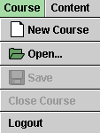

1. Logging into and out of the Arranger
1. Logging into and out of the Arranger
 2. Opening and closing a course
2. Opening and closing a course
 6. Adding and editing questions
6. Adding and editing questions
 7. Related Topics and Related Items
7. Related Topics and Related Items
The three parts of CANU, the Arranger, the Navigator, and the Administrator, can be accessed from the home page of the CANU system at http://canu.ucalgary.ca/instructors/ via the Start buttons shown in Figure 1 below.
Figure 1
To launch the Arranger, click its Start button. The dialog shown in Figure 2 below will open prompting you to supply your login name and password.
Figure 2
After clicking the 'Ok' button, the Arranger window with its three menus, titled 'Course', 'Content', and 'Window', and the toolbar open up. The menus and the toolbar are illustrated in Figure 3 below.
Figure 3
The toolbar provides shortcuts to many menu functions, but not to all of them. At this point you may want to explore what is available on the toolbar by pointing the mouse to an icon on the toolbar and reading the tooltip that pops up. Try to find the same function on one of the three menus.
Let us go no further, but log out of the Arranger. You should log out whenever you are finished working with the Arranger. You should not just close the Arranger window. To log out, pull down the Course menu, illustrated in Figure 4 below, and select Logout at the bottom of the menu.

Figure 4
The system will return you to the Login window from Figure 2. Close it if you like or keep it open if you think you may want to log in again at a later time.

Now let's go one step further than in the previous section. You have logged into the Arranger and want to open a course. To do so, pull down the Course Menu illustrated in Fig. 4 above and select 'Open...', the second item on the menu. Alternatively, you can select the corresponding icon from the toolbar.
You will be shown a listing of all courses to which you have been given access by the Adminstrator. If you have not yet created a course yourself, only the two courses MAP and DEMO may be listed, as in Fig. 5 below.
Figure 5
In Figure 5, the course MAP is shown selected. A brief description of the selected course is in the field on the right. If you want to select the course DEMO instead, click on 'DEMO'.
In the case illustrated, only two of the buttons at the bottom of the dialog are active: 'Open Read Only' and 'Cancel'. The 'Open' button is inactive because you do not have editing priviledges for the selected course.
If you click 'Cancel', the dialog will close and you can do something else, e.g., create a new course. Let's not do this right now and click 'Open Read Only' instead. The content of the course MAP will be displayed as in Fig. 6 below.
Figure 6
You can inspect all aspects of the course (for details on how to do this see the following section), copy parts of the course to another course, and even make changes to the course, but the system will not allow you to save these changes.
To create a new course, select 'New Course' from the Course Menu. Alternatively, you can select the corresponding icon from the toolbar. For an alternate way to create a new course see the 'General Comment' at the end of this section.
A 'Course Editor' dialog as in Fig. 7 below will open up. Complete it, and click 'Okay'. Note, however, that once you have clicked 'Okay' and the course has been added to CANU, you cannot use the Arranger to change the name of the course or delete the course from CANU. This can be done only with the Administrator.
Figure 7
The name of the course must be between 1 and 18 characters in length, with spaces counting as characters. The 'Course Name' text field is the only one that needs to have something in it. All other text fields may be left blank. The text fields apart from 'Course Name' have the following significance.
After clicking 'Okay' in the Course Editor dialog, the dialog is replaced by the window for the new course. The Arranger window displays the windows for the two courses that are now open, MAP and Physics 101, in cascade format, as illustrated in Fig.8 below.
Figure 8
You can change the display to a tile format by selecting 'Tile Windows' from the Windows menu. The resulting display, illustrated with the courses MAP and Physics 101, is shown in Fig. 9 below.
Figure 9
Use the Window menu to switch back and forth between the cascade and tile formats.
You can do several other things with a course window. You can minimize it by clicking the left-most of the three icons in the window's top right corner. Click in the minimized window to restore the window's original size. You can maximize the window by clicking the middle one of the three icons and can restore the window's original size by clicking the same icon again. You can close the window and the course by clicking the right-most of the three icons. The same can be done by selecting 'Close Course' from the Course menu. (More on closing a course in the following paragraph.) You can move a course window by dragging it by the window's title bar. You can resize a course window by dragging the window's lower right-hand corner.Before logging out of the Arranger, you must close all courses that you have open. To do so, choose 'Close Course' from the Course menu. If you made changes to a course, you can save these before closing the course by choosing 'Save' from the Course menu. Alternatively, you can click the Save icon on the toolbar. If you forget to save your changes, you will be prompted to save them when closing the course and at this time you have the option not to save the changes.
The Window menu currently contains a 'Switch to Frame' function. Selecting this causes the Arranger window to be displayed in a new frame that is resizable by dragging its lower right-hand corner. One can revert to the original frame by selecting 'Switch to Applet' from the Window menu. This feature is no longer important because the entire CANU window is now resizable (by dragging its lower right-hand corner).
Warning. While the 'Course Editor' dialog illustrated in Fig. 7 above is open, the Navigator is frozen. You must close the dialog by either clicking 'Okay' or 'Cancel' to be able to use the Navigator again. The same is true if any of the other Arranger dialogs are open, e.g., the 'Create New Concept' and 'Create New Instruction Item' dialogs illustrated in Figs. 13 and 15, respectively. The Navigator is not frozen if run in another browser, either on the same or another computer.
General Comment. You may want to create a new course by copying an existing course, e.g., the course MAP, deleting the parts from it that you don't need and adding new parts. Copying a course and renaming it requires the Adminstrator. It cannot be done with the Arranger.
Let us continue at the point illustrated in Figure 9 in the preceding section. Two courses are open in the Arranger, MAP and the new course Physics 101, but Physics 101 does not yet have any content.
The easiest way to add content to Physics 101 is to copy and paste material from MAP into Physics 101. Suppose you want to copy the entire branch 'Kinematics' from MAP into Physics 101. This can be done in one of two ways. The quickest way is to click on 'Kinematics' in MAP, keep the mouse button depressed and drag the item into the Physics-101 window so that the mouse pointer comes to rest on 'Physics 101', and then release the mouse button. The result is illustrated in Figure 10.
Figure 10
Another way to copy and paste 'Kinematics' from MAP into Physics
101 is by selecting 'Kinematics' in MAP (by clicking on it with
the mouse), selecting 'Copy' from the Course menu (or clicking the
corresponding icon  on
the toolbar), selecting 'Physics 101' in the Physics-101 window,
and selecting 'Paste' from the Course menu (or clicking the
corresponding icon
on the toolbar).
on
the toolbar), selecting 'Physics 101' in the Physics-101 window,
and selecting 'Paste' from the Course menu (or clicking the
corresponding icon
on the toolbar).
This copy/paste operation, in one operation, copies the branch 'Kinematics' with all of its sub-branches and leaves. To verify this, expand the branch 'Kinematics' in MAP by clicking the small '+' to the left of the branch name and similarly expand the sub-branch 'Constant Acc'n'. Do the same in the course Physics 101, and you should obtain the identical branch structure, as illustrated in Figure 11 below. To collapse the expanded structure, click on the '-' minus sign that has replaced the former '+' sign.
Figure 11
Suppose you do not want to include in Physics 101 some of the material under Kinematics, e.g., the material on Instantaneous, Radial, and Tangential Acceleration. You can delete any of these items from Physics 101 by first selecting the item to be deleted and then selecting 'Delete' from the Content menu, one item at a time. Instead of Using 'Delete' from the Content menu you can click the corresponding icon on the toolbar.
To move a content item up or down relative to the other content
items of a course, select the item and then select either 'Shift
Up' or 'Shift Down' from the Content menu. Alternatively, click on
the corresponding one of the two icons  on the toolbar.
on the toolbar.
Suppose that, in addition to copying material from an existing course, you want to add to Physics 101 material of your own and other web-based material. E.g., you may want to add a message titled 'Course Overview' and a link to an exciting website about physics research and career paths in physics titled 'Future Physics' and collect these two items on a branch titled 'Introduction'.
To add to Physics 101 a branch named 'Introduction', select 'Physics 101' in the Physics-101 course window. Then, from the Content menu, select 'New'. A secondary menu will open up with the three choices 'Concept', 'Instruction Item', and 'Question Item' as shown in Figure 12 below.
Figure 12
Select 'Concept'. Alternatively, you can select the corresponding icon from the toolbar. This will open up the 'Create New Concept' dialog shown in Fig. 13 below. Note that branches are called 'concepts' in CANU because MAP emphasizes concepts so that many branches of the course MAP carry the name of a concept.
Figure 13
You need to fill in the 'Concept Name' text field (1 - 18 characters). If you fill in the 'Description' field, a corresponding tooltip will appear when the mouse is over the button for the concept in the Navigator. If you check the 'Prevent student access' box, the concept will appear in grey rather than green both in the Navigator and the Arranger and students cannot access it. If you check the 'Hide from student' box, the concept will not be shown at all in the Navigator and will appear in pale green in the Arranger.
The 'Related Topics' tab lets you link the concept to the Navigator's search engine's list of items and lets you add the concept to the list if it is not already there. More on this in the later section 'Related Topics and Related Items'.
When you click 'Okay' in the 'Create New Concept' dialog, the concept 'Introduction' gets added to Physics 101 and is displayed in the Physics-101 window as shown in Figure 14 below.
Figure 14
The new branch (concept) is represented by a grey oval icon. The icon is grey, rather than green, because the branch has as yet no content.
Now let us add the two content items mentioned above, "Course Overview" and "Future Physics", and put them on the branch (concept) "Introduction" already created. CANU distinguishes between two kinds of content items and refers to them as "instruction items" and "questions". "Overview" and "Future Physics" are instruction items. It is clear what questions are and instruction items are simply anything else with a web address.
To add the instruction item "Overview" to the branch "Introduction", select 'Introduction' in the Physics-101 window and select 'Instruction Item' from the Content menu, as illustrated in Figure 12 above, or click on the corresponding icon on the toolbar. The 'Create New Instruction Item' dialog illustrated in Figure 15 below opens up with the 'Descriptive Information' tab open.
Figure 15
Fill in the fields on this tab in analogy to what was done with the 'Create New Concept' dialog illustrated in Fig. 13 above.
When done, don't click 'Okay' at the bottom of the dialog yet, but continue with the 'Location of Content' tab of the 'Create New Instruction Item' dialog. This is the second tab from the left. If you click on it, the window will change to that shown in Figure 16.
Figure 16
This tab lets you enter the URL for the 'Course Overview' page. Suppose the page has the URL 'http://myserver.uqualicum.ca/tutorials/physics101overview.html'. Compare this to the Base URL for Physics 101 which was chosen earlier (see Fig. 7) as http://myserver.uqualicum.ca/tutorials/. With the 'Use Base URL' checkbox checked, you only need to add the remainder 'physics101overview.html' of the item's URL in the page-1 textfield. If the 'Use Base URL' checkbox were not checked, you would need to add the item's entire URL 'http://myserver.uqualicum.ca/tutorials/physics101overview.html' in the page-1 text field.
If an instruction item has more than one page, as is true for the one you are reading at present, each page will have to have its own URL. You can enter these URL's by selecting the number of pages from the 'Number of Pages' drop down menu on the 'Location of Content' tab. This will open up as many text fields as there are pages. It will also make the buttons under 'Page Navigation' at the bottom of the tab active giving you a choice of format for the page navigation. Details on this in the next section 'Editing course content'. The function of the remaining two tabs, 'Related Topics' and 'Related Items', is described in the final section.
Now click 'Okay' at the bottom of the 'Create New Instruction Item' window. The item 'Course Overview' will be added to the branch 'Introduction' and displayed as in Fig. 17 below. Fig. 17 also includes the instruction item 'Future Physics'.

Figure 17
You may wish to have the branch 'Introduction' appear ahead of the branch 'Kinematics'. To move it up, select 'Introduction' and click the Move-up icon on the toolbar.
Adding the 'Future Physics' instruction item is done just like adding the 'Course Overview' item, except for one difference. The 'Future Physics' item points to a website located on a different server than the one named in the Base URL. Thus, for this item one cannot use the Base URL and must enter the item's entire URL in the page-1 text field. This is illustrated in Fig. 18 below.
Figure 18
Note that the 'Use Base URL' checkbox is not checked this time.
If you want to make no further changes to Physics 101 at this time, save your changes by clicking the Save icon on the toolbar and close the course using the Course menu. You can return to the Arranger at a later time and edit your course. Editing a course and editing instruction items is the topic of the next section.
In the last section you added a one-page instruction item named 'Course Overview' to Physics 101. Suppose you want to re-organize the material in 'Course Overview' so that it becomes a 3-page item. This can be done as follows. Since you created Physics 101, you automatically have editing priviledges for the course.
Log back into the Arranger, if necessary, and re-open Physics 101. Select the item 'Course Overview' and then select 'Edit...' from the Content menu or click the Edit icon on the toolbar. You can also simply double-click on 'Course Overview'. The 'Edit Selected Instruction Item' dialog opens up. It looks like the 'Create New Instruction Item' dialog illustrated in Fig. 15 above. Click on the 'Location of Content' tab, and select '3' from the 'Number of Pages' drop-down menu. Text fields for entering the URL's of the three pages will open as illustrated in Fig. 19 below.
Figure 19
Enter the URL's for the three pages, and select the page navigation format under 'Page Navigation'. The format used in the course MAP is illustrated in Fig. 19. It is achieved by selecting three of the five checkboxes as indicated. Click 'Okay' if these are all the changes you want to make to the item.
Comment. In entering the three page URL's when editing the 'Location of Content' tab, you may want to copy/paste the URL from the field for page 1 into the fields for pages 2 and 3 and then make the minor corrections required in the last two addresses. This would work. However, it is not possible to copy/paste a URL (or any text) from outside of the CANU applet into the Arranger text fields. This is a feature of the java security protocol. An applet does not interact with any other applications that you may have on your computer.
You can edit the particulars describing a branch (concept) or those describing the course Physics 101 just like editing an instruction item. However, as mentioned earlier, you cannot change the name 'Physics 101', and you cannot delete the course. This can be done only by using the Administrator.
It is possible to preview an item while working in the Arranger. Suppose you are considering copying a content item from the course 'MAP' into Physics 101, but are not sure if the item is suitable. To preview the item, select it and then select 'View...' from the Content menu or click the View icon on the toolbar. The item will open up in a separate resizable pop-up window. Close the window before continuing to work with the Arranger.
Suppose you want to add a question about average velocity to Physics 101. As mentioned above, CANU distinguishes between 'instruction items' and 'questions'. The logistics of questions are different from instruction items because there must be room for student input and corresponding system responses. Therefore, CANU provides a separate dialog for creating and editing a question.
Physics 101 already contains the MAP material on Kinematics. So let's add a question in this area. In the Arranger, under Kinematics, navigate to Velocity/Average/Test Yourself. This is the branch where questions on average velocity are collected. Select 'Test Yourself' and then select 'Question Item' from the Content menu under 'New' as illustrated in Fig. 12 above or click on the 'New Question' icon on the toolbar. The 'Create New Question' dialog will open up with the 'Basic Information' tab open. See Fig. 20 below.
Figure 20
Fill in a question name (1 - 18 characters long), and if you want to have a tooltip for the item fill in the 'Description' text field. If you click 'Okay' at the bottom of the dialog, the question will be added to the course and the Kinematics branch of Physics 101 in the Arranger will look as illustrated in Fig. 21 below.
Figure 21
You will need to enter more particulars for the new question, like the type of question it is to be. This is done on the 'Question and Responses' tab. If you click 'Okay' on the 'Create New Question' dialog before completing this tab, you can complete the tab later. To do so, select the question, click on the Edit icon from the toolbar, and select the 'Question and Responses' tab.
Do this now for the 'Round Trip' question. Pull down the 'Question Type' menu. The menu offers a choice of four types of questions. Depending on which one of the four question types you select, the 'Question and Responses' tab will present a different set of text fields for you to complete. The text fields for the four question types will now be dealt with in turn. The use of the 'Related Topics and 'Related Items' tabs is explained in the final section.
6.1. Multiple choice. Fig. 22 below illustrates the 'Question and Responses' tab when 'Multiple Choice' is selected from the 'Question Type' pull-down menu.
Figure 22
6.2. Simple numeric. Only the text fields and checkboxes different from those described under '6.1 Multiple Choice' are described. See Fig. 23 below for an illustration of the 'Question and Response' tab in this case.
Figure 23

Figure 24
Note that in this example the box 'URL Relative to Question Location' is not checked (see Fig. 23) so that the 'Response Location' text field must contain all of the URL beyond the Base URL.
6.3. Scientific Numeric. The dialogs for this question
format are identical to those for the 'Simple Numeric' format,
except that numerical values are entered in a different format.
All values are entered with three significant digits in the format
The notation
6.4. Text, fill in the blank. Only the text fields and checkboxes different from those described above for the three other question types are explained. See Fig. 25 below for an illustration of the 'Question and Response' tab in this case.
Figure 25
Figure 26
Also note that a separate response page has been entered for 'Complete Match Response 2', with address 'correctsp.html' as opposed to 'correct.html' for 'Complete Match Response 1'.
Related Topics. The content items and the concepts (branches) of a course in CANU can be related to subject areas called 'topics' in CANU. The set of topics for a course forms an index that can be searched in the Navigator. To access the 'Topics' index select 'Search' from the Navigator's 'Content' menu. If you select a topic, the Navigator lists all content items linked to this topic and provides direct access to any of these items. For more detail, see the User's Guide for the Navigator.
For example, to relate all questions on average velocity in the course Physics 101 to the topic 'Average velocity', start by selecting the 'Test Yourself' branch at Kinematics/Velocity/Average/Test Yourself/. See Fig. 21 above. Then click on the Edit icon on the toolbar, and select the 'Related Topics' tab in the 'Edit Selected Concept' dialog. The resulting dialog is illustrated in Fig. 27 below.
Figure 27
Scroll through the list under 'Topics already in this Course', and check if the list already contains 'Average velocity'. In the case illustrated it does. Select 'Average velocity' in the list of topics and click the 'Add' button. The topic will appear in the field on the right titled 'Topics Related to this Item'. If you made a mistake and do not want 'Average velocity' to be related to the given content item, select 'Average velocity' under 'Topics Related to this Item' and click the 'Remove' button.
If 'Average velocity' is not already listed under 'Topics already in this Course', enter it in the text field 'New Topic' and click the 'Add Topic' button. 'Average velocity' will be added at the end of the listing 'Topics already in this Course', but will appear in correct alphabetical order the next time the 'Related Topics' dialog is opened up.
The steps required to relate an instruction item or a question to a topic are analogous to those for a concept (branch) described above.
Related Items. It is possible to link to a given instruction item or question to any other such item in the course. Such linked items are listed in a separated area under the title 'Related Items' in the bottom left corner of the Navigator window when the given instruction item is on display.
For example, you may want to link to the item Kinematics/Velocity/Average/Get Information in Physics 101 to an item that gives information on displacement. To do so, select the item Kinematics/Velocity/Average/Get Information in the Arranger (the item is displayed but not selected in Fig. 21 above), click the Edit icon on the toolbar, and select the 'Related Items' tab. The resulting window is illustrated in Fig. 28 below.
Figure 28
In the directory displayed under 'Available Items' on the left of the window, navigate to Kinematics/Displacement/Get Information, select the item, and click the 'Add' button. An additional 'Reference Name' dialog opens up. This dialog too is illustrated in Fig. 28.
In this example, the related item is given the name 'Displacement'. This is the name by which the item will be listed under 'Related Items' in the Navigator. Click 'Okay' in the 'Reference Name' dialog, and 'Displacement' will be added under 'Current Related Items'. You can add as many related items to the given instruction item as you like. You also can remove such items by selecting them and clicking the 'Remove' button.
Comment 1. Related items must be part of the course. If you want to relate a given instruction item to an outside website, you can create an instruction item that points to this website and then make this new instruction item a related item.
Comment 2. In the course MAP, simulations are often related to pages containing suggested activities. Such pages must be present in the course as instruction items before they can be used as related items. You may want these pages to be accessible only in the 'Related Items' area of the Navigator when the simulation is displayed, but not to be accessible directly. This can be done by checking the 'Hide from student' checkbox (see Fig. 15 above) in the 'Create New Instruction Item' or 'Edit Instruction Item' dialogs for the activity page.
Comment 3 (important). When copying an entire branch from a course, say, MAP, to another course, say, Physics 101, all links to related items are copied as well, as long as the related items are on the branch that is being copied. Links to related items on another branch are not copied, even if that branch has already been copied earlier. Therefore, if one wants to copy part of a course and maintain all links to related items existing within that part, one must not copy this part branch by branch. A successful strategy would be to copy the entire course and then delete the parts that are not of interest.
You cannot use the Arranger to copy an entire course. Courses can be copied only by using the Adminstrator. You will want to give a new name to the copy of a course. That too can be done only with the Administrator.